2023年10月吃的。这家店是「第13届冲绳面集章活动（2023.10.1～2024.2.29）」的参加店，我是作为34间店中的第11间去的😊
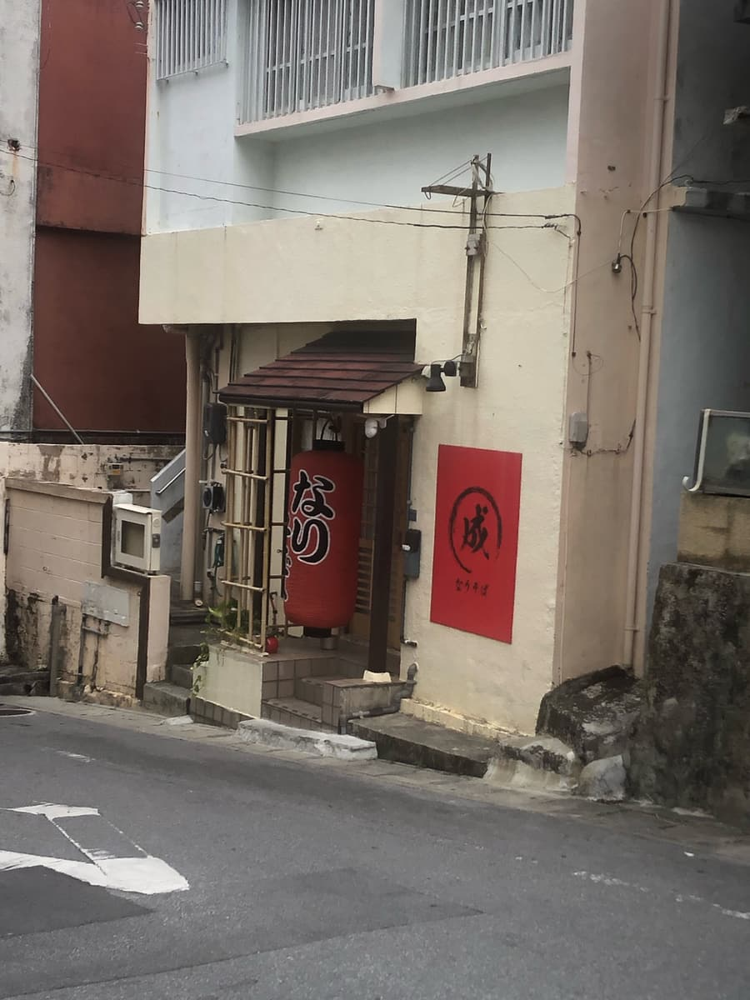
集章手册的说明写着「24h无人营业中」，所以对系统是「？」的感觉，但走进店内之后就渐渐明白了😊
相当新鲜ｗｗ 首先吸引我的是店内的门(笑) 横拉门打开后会自动关上，没想到动力竟然是靠装在宝特瓶里的重物的重力来关门的类型ｗｗｗ 发明的人好厉害(笑)
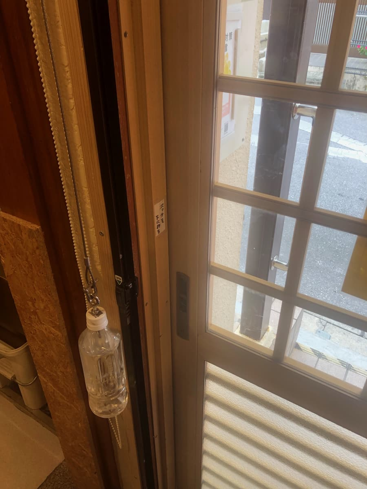
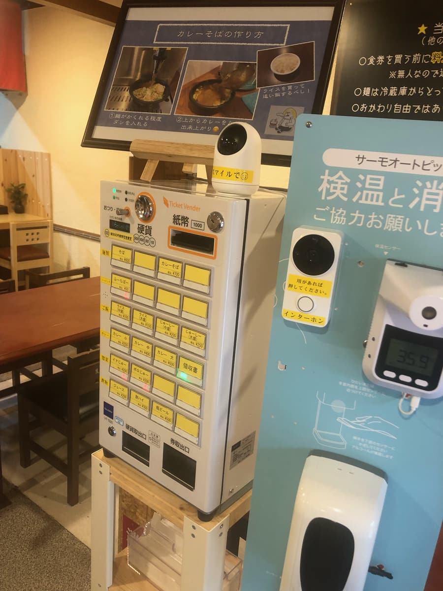
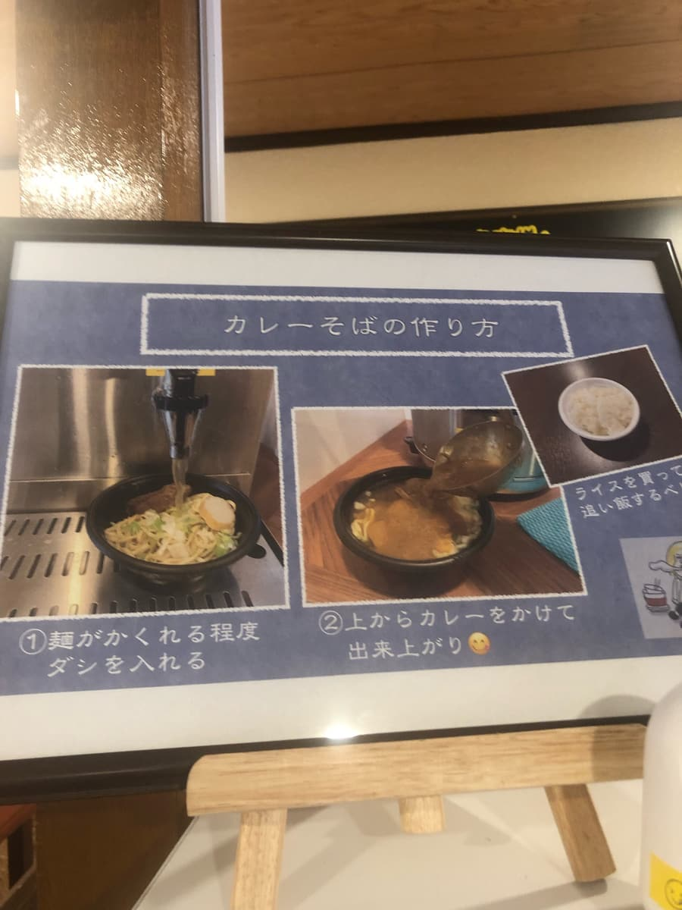
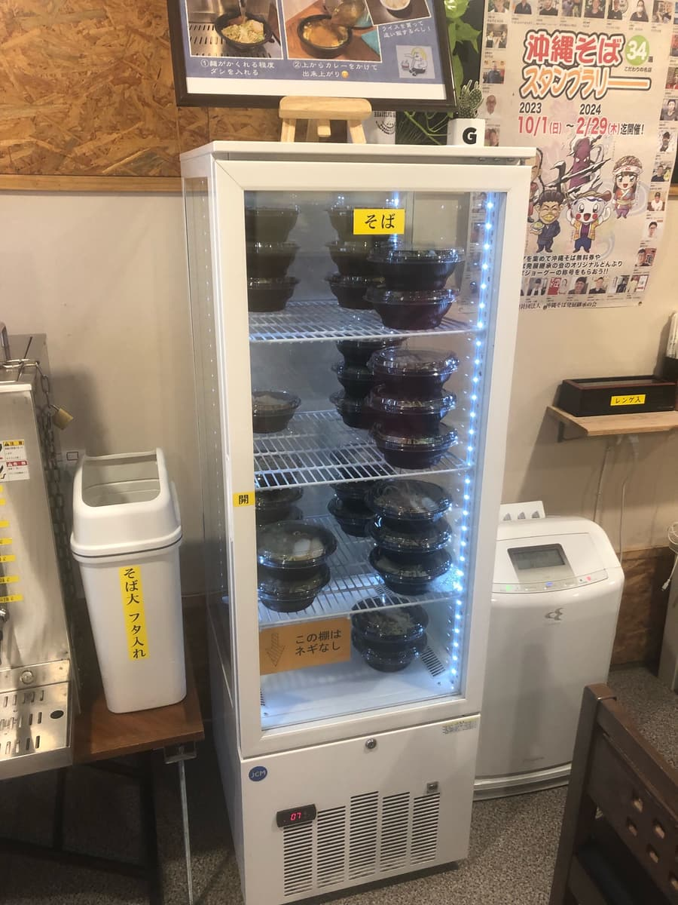
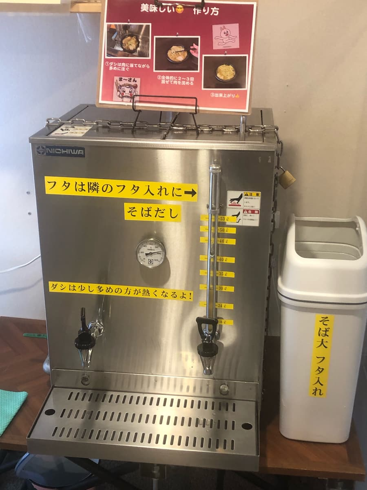
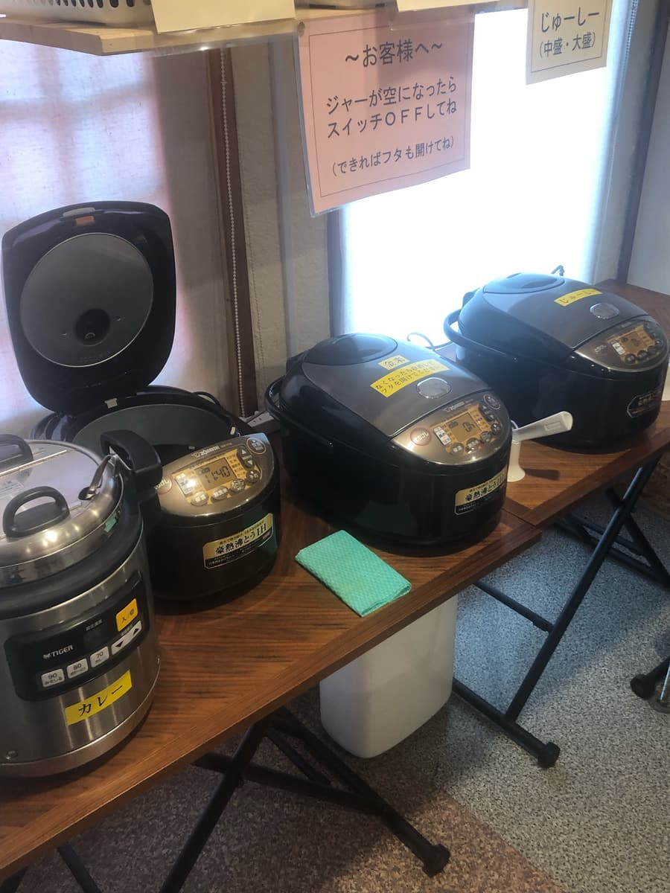
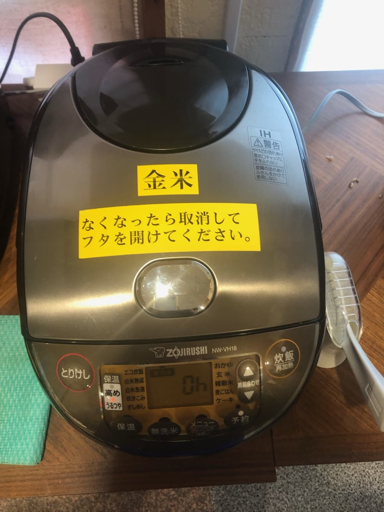
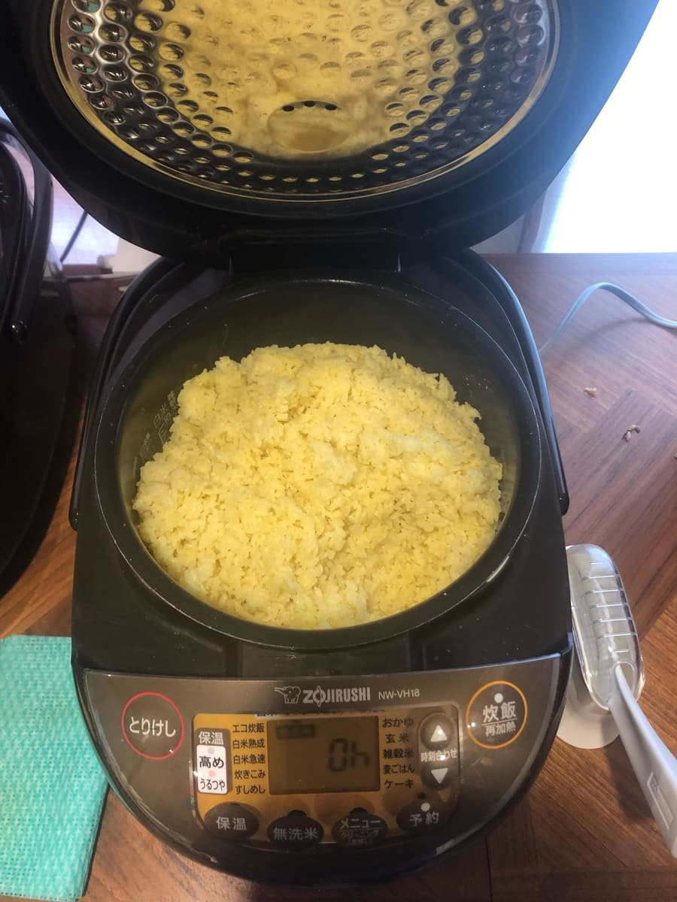
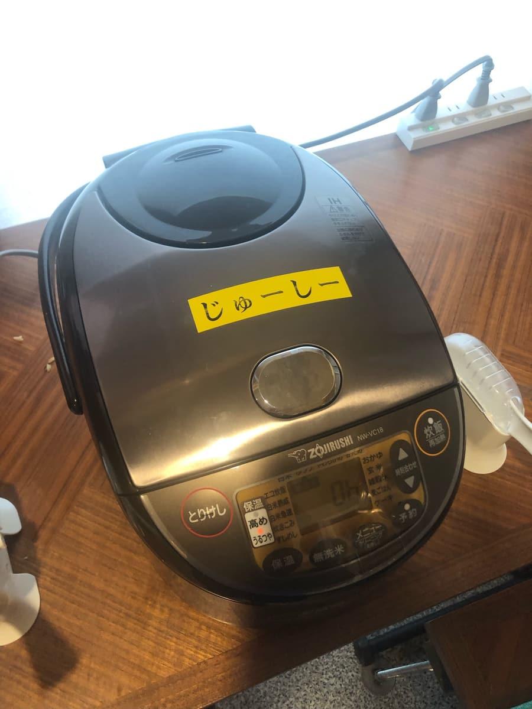
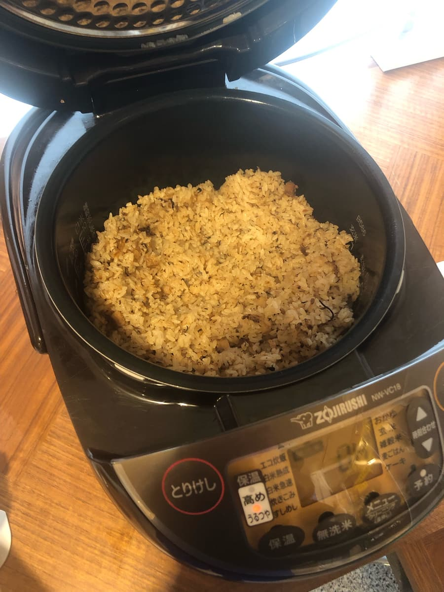
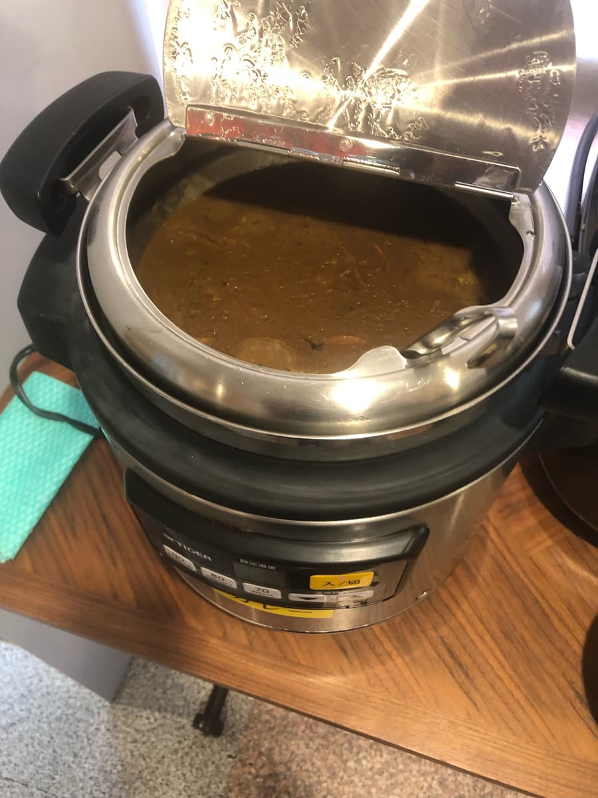
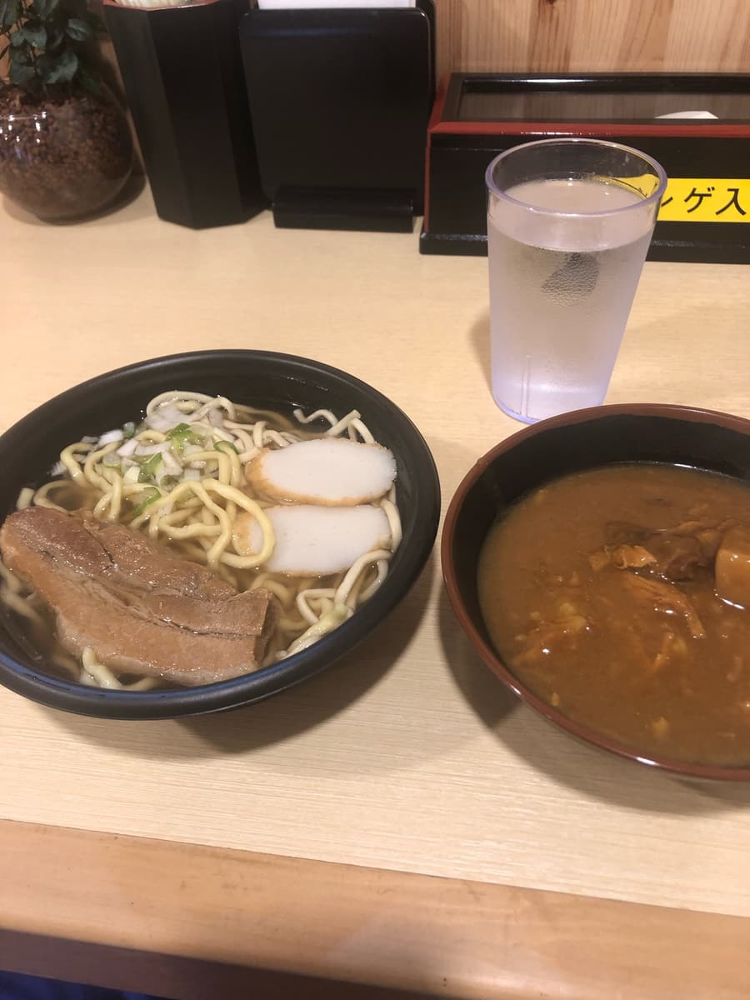
先喝一口冲绳面的汤。这里的汤是猪骨为底偏强吗？果然就像便当店里放的小菜冲绳面的感觉。
面条也是微卷类型，三层肉也很软嫩，就是普通的好吃。虽然像刚才的照片那样冷藏保存，但因为是热汤，有种现做的感觉ｗｗ
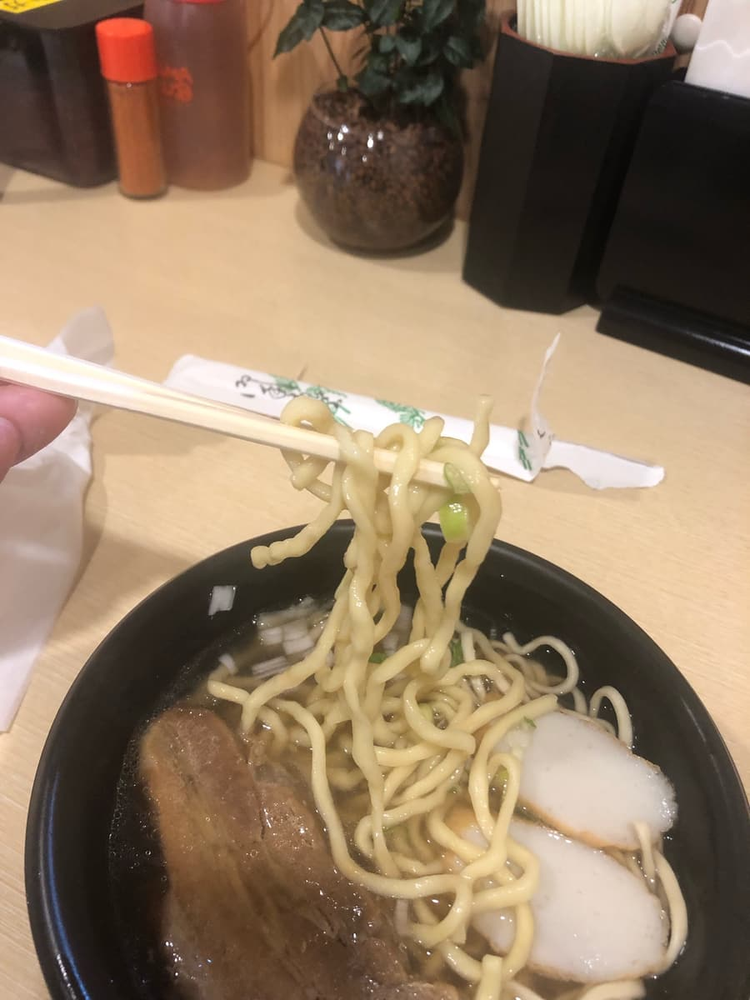
评分（9分/15分）：就是普通的好吃。我想应该有装监视器，不过24h无人营业是靠与客人之间的信任才能成立的系统呢ｗｗ 这种系统的冲绳面店我是第一次遇到，所以要不要来体验一次呢？
面：★★★☆☆（3）
汤头：★★★☆☆（3）
配料：★★★☆☆（3）